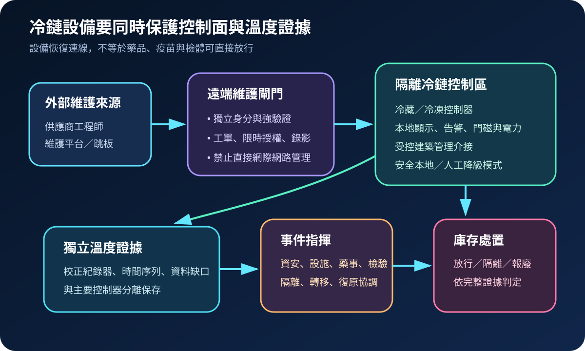
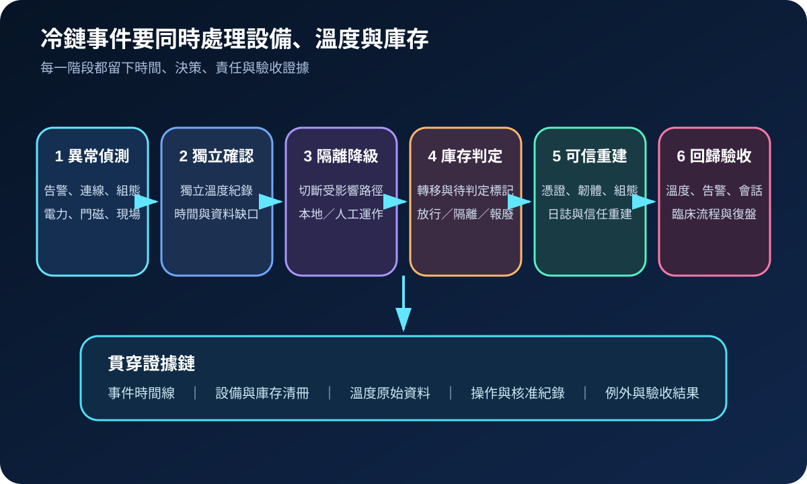
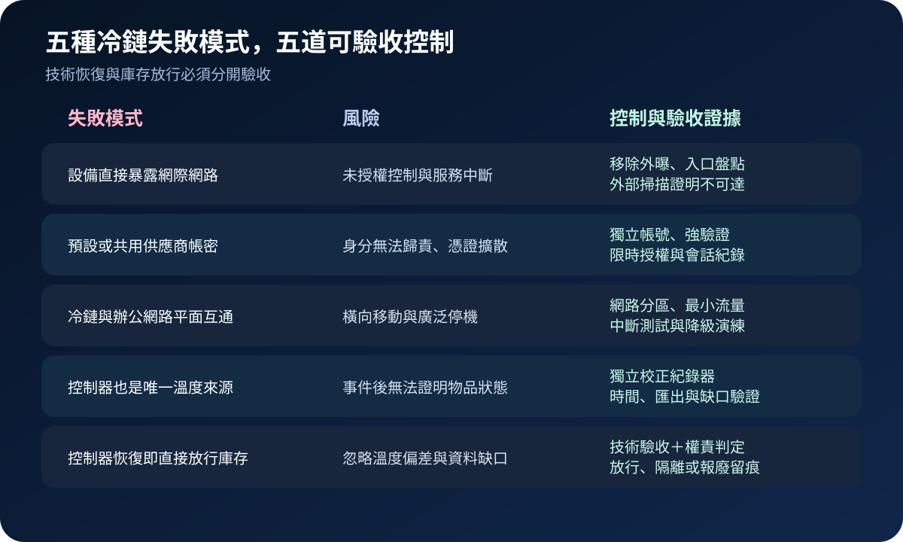

醫療資安國際觀察 · 2026-11-05
醫院冷鏈設備遭網攻時如何保住藥品與檢體：從外部曝險到溫度證據
作者：Dr. William｜醫療資訊與資安治理實務工作者
冷凍設備的網路事件不只影響控制器可用性；真正的治理問題是能否持續取得可信溫度紀錄、及時轉移庫存，並由藥事、檢驗、設施與資安共同判定物品是否可繼續使用。
名詞解釋：冷鏈 OT、降級運作與獨立證據
冷鏈 OT包含冷藏／冷凍設備、控制器、感測器、告警、遠端維護與建築管理介接。降級運作是在中央控制或網路不可用時，以本地控制、人工巡檢、替代庫位及受控轉運維持必要服務。獨立溫度證據是與主要控制器分離、可校正、可匯出且具時間資訊的紀錄，用來支持庫存處置與事件調查。
國際現況與適用邊界
ENISA 於 2026 年 11 月 4 日表示，自 10 月 11 日起，多個歐盟會員國的商用冷凍系統及類似裝置受到資安事件影響，並在 11 月 1 至 2 日出現新一波事件；聲明要求相關組織立即降低受影響系統的曝險。該聲明沒有指出醫院遭到攻擊，因此本文屬於醫療冷鏈的情境轉譯，不是醫療事件通報。英國 NCSC 於 2026 年 8 月 27 日警示多個產業的 OT 遭到更多鎖定，要求組織驗證網際網路曝險、快速隔離受影響系統，並從可信備份恢復必要運作。NIST SP 800-82 Rev. 3 則提供 OT 分區、遠端存取、事件回應與生命週期控制基線。
台灣適用原則：ENISA 與英國 NCSC 的聲明及指引不是台灣醫院的法定義務。可作為冷鏈控制架構、供應商遠端維護、事件分流與韌性測試的技術參考；實際溫度範圍、庫存處置及通報仍須依產品標示、主管機關要求、契約與院內藥事／檢驗程序判定。
規劃：把臨床物品、設備與證據放進同一張清冊
規劃範圍應連結庫位、設備、控制器、感測器、網路、遠端維護、備援電力、替代庫位及物品類別。每個庫位至少定義業務負責人、設施負責人、資安聯絡人、告警門檻、人工覆核頻率、可接受中斷、轉移路徑與庫存處置權限。驗收指標可包含外部暴露歸零率、預設憑證清除率、遠端會話核准率、獨立紀錄覆蓋率、告警到人工確認時間、替代庫位可用率及演練中完成轉移的時間。
實作：六階段保住運作與判定依據
- 盤點：建立設備型號、韌體、管理介面、供應商與庫存依賴。
- 收斂曝險：移除直接網際網路存取，停用預設帳密，遠端維護採限時授權與會話紀錄。
- 分離證據：讓獨立、可校正的溫度紀錄器持續保存時間序列；CDC 疫苗冷鏈資料將數位資料記錄器與有效校正證明列為重要監測工具。
- 偵測確認：中央告警異常時，同步比對獨立紀錄、現場顯示、門磁、電力與環境狀態。
- 降級處置：隔離受影響控制路徑，切換本地或人工模式，依核准流程轉移庫存並標記待判定物品。
- 可信恢復：保全證據、重設憑證、驗證組態與韌體，完成溫度、告警、遠端維護及臨床流程回歸後再接回。

風險：控制器恢復，不代表庫存可以直接放行
常見失敗包括設備直接對外、共用或預設帳密、冷鏈與一般辦公網路未分區、遠端維護長期開放、主要控制器兼任唯一紀錄來源，以及復原後未處理時間漂移與資料缺口。控制方式是外部曝險掃描、獨立身分與網段、限時遠端會話、主機外日誌、獨立校正紀錄器、資料缺口標記，以及由具權責的藥事／檢驗單位依完整證據完成放行、隔離或報廢判定。

可執行清單
- 所有冷藏／冷凍控制器與閘道是否完成外部曝險掃描？
- 預設帳密、共用供應商帳號與長期遠端通道是否清除？
- 每個關鍵庫位是否有獨立、可校正、可匯出的溫度紀錄？
- 網路中斷時是否仍能本地控制、人工巡檢與安全轉移？
- 庫存隔離、放行與報廢是否由具權責單位依證據決定？
- 恢復演練是否同時驗證設備、告警、時間、紀錄與臨床流程？
來源
- ENISA｜Joint statement on cyber incidents in refrigeration systems across the EU（發布：2026-11-04；查閱：2026-11-05）
- UK NCSC｜Disruptive cyber activity highlights risk from internet-exposed systems and edge devices（發布：2026-08-27；查閱：2026-11-05）
- NIST｜SP 800-82 Rev. 3: Guide to Operational Technology Security（發布：2023-09-28；查閱：2026-11-05）
- CDC｜Vaccine Storage and Handling Toolkit（更新：2026-07-14；查閱：2026-11-05）
內容說明
本文依健康台灣深耕計畫相關治理內容整理，並參考 ENISA 冷凍設備事件聲明、英國 NCSC 與 NIST OT 指引及 CDC 疫苗冷鏈資料，說明醫療冷鏈的曝險收斂、獨立監測、降級運作與可信恢復；不把外國聲明或技術指引視為台灣法定要求，也不取代產品標示、主管機關規範、藥事／檢驗判定與法律意見。